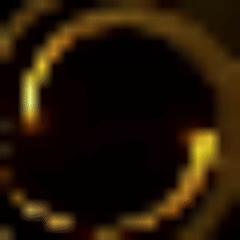

macroquest_ ATTO I - Bill (1)
Nella prima mattinata, gli elfi e i nani sono giunti al ritrovo dopo un lungo cammino. Purtroppo non è stato momento per feste o racconti, poiché la notizia di un attacco che verrà con il calare della sera è giunto inesorabile visto dagli scout Elfici. Avete condotto quindi la giornata preparando degli schieramenti, pregando i vostri dei, stringendo le persone care, perché sapete che, in un angolo di questo mondo pronto alla devastazione, voi siete la resistenza. Vi siete schierati a difesa del bosco elfico, luogo che pare sarà l'obiettivo del nemico. Una locazione perfetta, che offre un'ampia veduta per una battaglia campale. La sera è calata sull’accampamento condiviso tra Ghileas e Necromunda e non porta quiete ma una tensione sottile che sembra attraversare ogni cosa, le torce tremolano lungo il perimetro mentre le file ordinate dei soldati si dispongono con disciplina: il metallo delle armature stride piano mentre viene sistemato, le corde degli archi vengono tese e rilasciate per prova, i cavalli fremono battendo gli zoccoli sulla terra come se percepissero qualcosa che ancora non si vede del tutto. Davanti all’accampamento le forze congiunte sono schierate con precisione, duecento uomini divisi in sessanta arcieri, sessanta cavalieri e ottanta fanti formano una struttura solida e pronta all’impatto, gli arcieri occupano le retrovie in più linee sovrapposte, i cavalieri si distribuiscono sui fianchi pronti a muoversi con rapidità, i fanti costituiscono il cuore dello schieramento con scudi alzati e armi serrate, una muraglia che attende. Poco più arretrati ma ben distribuiti si trovano i silvani e i marittimi, circa un centinaio di arcieri guidati da Aerendyl Lóthienar ed Elaris Thalvyr, figure più leggere ma tese come corde pronte a scoccare, le frecce già incoccate e gli sguardi rivolti verso l’oscurità, mentre le daghe ai fianchi restano silenziose promesse di morte ravvicinata. Al centro, compatti e incrollabili, i cinquanta nani guidati dal Re Occhio di Brace serrano le file senza lasciare spazi, scudi uniti e piedi piantati nel terreno come se fossero parte della montagna stessa. Poi il silenzio cambia, non scompare ma si trasforma, perché da oltre l’oscurità arrivano suoni lenti e profondi, radici che strisciano, terra che si apre sotto un peso innaturale, un ritmo sordo che sembra un battito troppo grande per appartenere a una sola creatura. Dalle ombre emerge il primo plotone composto da centocinquanta non morti, cento guerrieri e cinquanta arcieri, le loro armature sono fatte di corteccia saldata alla carne e alle ossa, i movimenti sono rigidi ma determinati, nelle mani stringono armi fatte di zanne gigantesche, denti di creature dimenticate che brillano di una luce spenta, gli arcieri sollevano archi costruiti con ossa e legno morto mentre le orbite vuote restano fisse sul campo. Subito dietro avanza il secondo plotone con centocinquanta uomini bestia, ottanta guerrieri dal corpo massiccio e deformato, trenta cavalieri in groppa a lupi enormi dalle fauci spalancate e quaranta arcieri più agili ma altrettanto feroci, il loro avanzare è accompagnato da ringhi e movimenti nervosi, non marciano ma sembrano trattenere a fatica la violenza che li anima. A chiudere la formazione si muove il terzo plotone, centocinquanta valchirie non morte di Ocer-Gur-Dul, ottanta cavalieri montati su incubi dagli occhi e dalle code infuocate, quaranta guerriere armate di lance a doppia lama e trenta arciere immobili e perfette come statue, avanzano senza un suono, senza fretta, come se il loro arrivo fosse già scritto. Dietro tutti loro, ancora distante ma impossibile da ignorare, si erge l’enorme albero, una massa titanica di radici e corteccia deformata, il tronco contorto e spezzato in più punti come se fosse cresciuto oltre ogni limite, rami giganteschi si muovono lentamente come arti vivi e ogni suo passo fa vibrare il terreno, non attacca, non accelera, continua ad avanzare con una calma che pesa più di qualsiasi carica. Le linee restano ferme mentre il vento porta l’odore della terra smossa e della morte antica, tra i soldati passa una consapevolezza difficile da ignorare, quella presenza non è lì per una battaglia ordinaria ma per qualcosa di più grande, qualcosa che non cerca semplicemente di vincere ma di cancellare ciò che trova davanti a sé.
Un taglio netto si apre nell’aria sopra il campo, come se il cielo stesso venisse inciso da una lama invisibile, e da quella ferita prende forma una porta di pura energia, instabile e vibrante, attraversata da venature violacee che pulsano come vene vive. Da essa emerge una figura che si solleva lentamente fino a una ventina di metri dal suolo, sospesa nel vuoto senza sforzo apparente. A prima vista è un uomo, proporzioni perfette, postura eretta, ma qualcosa nella sua presenza spezza ogni illusione di normalità: gli occhi brillano di un viola innaturale, luminoso, quasi sacro e al tempo stesso disturbante, come se riflettessero un potere che non appartiene a questo mondo. Indossa un’armatura scura, levigata e priva di imperfezioni, sulla quale svettano sei sfere incastonate che emanano un bagliore sottile ma costante; chi possiede conoscenze arcane o memoria storica riconosce immediatamente la loro natura, sono le sei sfere di Jaspree, ma la loro luce appare alterata, piegata a una volontà diversa. La voce dell’uomo scende dall’alto, chiara e priva di esitazione, amplificata da qualcosa che non è semplice eco: «Ed infine ha inizio.» Un breve istante di silenzio, poi prosegue mentre il vento cambia direzione e una corrente fredda da est attraversa il campo portando con sé un odore acre, antico, difficile da definire. «Il vento dell’est è giunto e con sé porta l’odore di tutto ciò che è stato cancellato, di cui non si è parlato, servitori dimenticati che hanno scelto di guidarmi.» Alla sua presenza i tre plotoni nemici reagiscono all’unisono, un movimento compatto, un’esaltazione brutale che si traduce in un unico grido che si alza verso di lui, riconoscendolo senza esitazione come guida. Chaos solleva appena il mento, osservando lo schieramento opposto dall’alto, lo sguardo che scivola su uomini, elfi e nani come se ne misurasse il valore. «Piegatevi ed unitevi a me, oppure combattetemi e mi servirete da morti, come un’altra fetta di umanità cancellata che torna per punire chi ha vissuto troppo a lungo, guardando al proprio ego, alle dicerie divenute leggi, al profano divenuto fede.» Le sue parole restano sospese nell’aria, cariche di una calma inquietante, mentre la porta magica alle sue spalle continua a pulsare senza chiudersi, segno evidente che attende una risposta prima che tutto abbia realmente inizio.
Al centro dell'accampamento, la paura non è un concetto astratto, ma una presenza fisica che soffoca i polmoni. Tra i ranghi un mezzo centinaio di elfi silvani, la cui grazia millenaria si è incrinata in una rigidità febbrile. I loro volti, solitamente sereni, sono maschere di marmo pallido; i loro occhi, acuti oltre ogni misura umana, fissano l'oscurità oltre le torce del perimetro, cogliendo i dettagli più atroci dell'esercito nemico immobile: larve che strisciano tra le giunture delle armature necrotiche e il tremolio innaturale delle mandibole di zanna che si aprono e chiudono in un ritmo muto. Stringono gli archi con una forza tale che il legno pare gemere, pronti a scatenare l'inferno non appena l'aria verrà squarciata.
Tre decine di umani di Ghileas, meno avvezzi al distacco elfico, reagiscono con la brutalità di chi sa di essere carne da macello. L'odore acre dell'urina e del sudore stantio si mescola alla nebbia che striscia tra le file; è un ticchettio metallico continuo, prodotto dalle spade che sbattono impercettibilmente contro gli schinieri. Qualcuno prega a bassa voce divinità che sembrano aver abbandonato il campo, mentre i destrieri sbuffano vapori grigiastri scartando di lato, percependo l'odore della decomposizione che emana dai centocinquanta non morti schierati proprio davanti a loro. Non c'è coraggio spavaldo, solo la disperazione di animali messi all'angolo tra le mura di tela e legno che attendono il primo sibilo per esplodere in una carica suicida.
In questo quadro di terrore puro, Pioppo, Castagno e Faggio si ergono all'interno del perimetro come bastioni di un'era in cui la paura non era stata ancora concepita. Per i tre Guardiani, l’armata nemica non è che un parassita da estirpare con la pazienza della roccia. Mentre gli uomini e gli elfi sussultano a ogni battito di ciglio di Chaos, i tre colossi restano immobili accanto alle linee dei fanti, le loro radici affondate così profondamente sotto il suolo dell'accampamento da sentire il battito febbrile della terra stessa.
Tutto è sospeso. I non morti stringono le loro armi di dente, i cavalieri nell'accampamento serrano le lance, e i tre Ent torreggiano immobili nel silenzio macabro che avvolge le tende, mentre il mondo intero sembra trattenere il respiro, fissando quella figura sospesa nel cielo che attende solo un sussulto per trasformare la tensione in un oceano di sangue.
OFF: Turni liberi e scena aperta. Buon gioco a tutti e benvenuti!
21:25Mihawk [Radura] La sera grava sul campo come una sentenza non ancora pronunciata e in mezzo a quell’attesa il Latore Oscuro si erge immobile, già vestito da guerra. L’armatura che lo avvolge non ha nulla della luce fredda del metallo comune: è nera, profonda, come se fosse stata forgiata in un’ombra viva. Venature cremisi la percorrono in ogni sua parte, cesellature sottili che paiono pulsare a ritmo come un sistema arterioso, tracciando rune e linee sacrali lungo il torace, le spalle e le braccia. Ogni piastra combacia con precisione innaturale, aderendo al corpo come una seconda pelle, consacrata alla guerra e al sangue. Lo scudo è già saldo, agganciato all’avambraccio sinistro: la sua superficie scura riflette appena le luci tremolanti delle torce, deformandole in bagliori opachi, come se rifiutasse di restituire al mondo ciò che riceve. Non è sollevato, non ancora, ma è pronto, parte integrante del corpo. Dietro la schiena, InvernoRosso riposa nel suo fodero. La lama non è visibile, ma la sua presenza è tangibile, come un respiro, come un’offerta non ancora versata. L’elsa emerge appena oltre la spalla, in attesa del momento in cui verrà richiamata alla mano del suo padrone. Gli schinieri, anch’essi segnati da incisioni cremisi, affondano nella terra con stabilità assoluta. Il volto è coperto: l’elmo è una corona di terrore, le corna monumentali si protendono come lame verso il cielo. La visiera non cela il volto, lo annienta, nessun lineamento è visibile all’ altrui vista, solo gli occhi rossi che guardano il mondo con furia silenziosa. Lo stesso sguardo punta oltre le linee nemiche, oltre i non morti, oltre le bestie, oltre le valchirie, fino a quella figura sospesa nel cielo. « . . . » Non c’è paura in lui. Non c’è dubbio. Solo concentrazione. Un silenzio interiore assoluto, in cui ogni respiro è controllato, ogni pensiero è ridotto all’essenziale. L’aura che lo avvolge non esplode, non si disperde. Si contrae attorno al suo corpo come una morsa invisibile, densa, oscura, pronta a essere liberata al primo segnale. Le dita della mano libera si serrano lentamente, mentre il capo si inclina appena, in un gesto che non è sottomissione ma preparazione.
21:25Akuma

[Settore Ghileas] [Il guercio alza lo sguardo verso l'alto ed osserva il cielo per lunghi istanti, immobile, come se cercasse qualcosa tra le nuvole che solo lui sa riconoscere, prima di inspirare con forza dalle narici, un respiro lungo e profondo, come se dovesse percepire qualcosa da quel gesto. L'occhio nero ricade poi sull'esercito attorno a sé, scorrendo lento. L'espressione non lascia trasparire alcuna emozione, anzi sul volto inizia il principio di un sorriso, indirizzato verso Mynoth, che fa parte del distaccamento Ghilesiano come lui, un riconoscimento silenzioso. Indosso porta Equa Aurea e non potrebbe essere diversamente da così, come non può mancare la cintura rinforzata che contiene la spada, la verga, il memoriae mundi e le due pozioni. L'elmo non è ancora calato sul volto, la mano destra lo sostiene per qualche istante, il peso del metallo familiare tra le dita, prima che il grande occhio nero inizi a mostrare qualche barlume di colore grigio. Come una coltre di fumo denso, l'occhio si riempie della propria ars e lui volge lo sguardo verso il nemico, la mascella che si stringe appena sotto la barba grigia, andando ad afferrare lo scudo che poggiava contro la gamba, alzandolo di fronte a sé con un gesto secco, prima che l'elmo cada a celare il volto].Osserva, nemico dei popoli liberi. L'unica cosa che sei riuscito a compiere è il miracolo di unificare gli intenti.[Parla all'indirizzo di Chaos e la voce è tonante e profonda, smossa anche dalla propria ars mistica che rende ogni parola più pesante, più difficile da ignorare. L'ars non fa altro che rendere più pressante la propria presenza, più appassionate ed emozionali le sue parole, ed è allora che si rivolge a chi gli è attorno, il corpo che si volta lento verso i propri].Volontà su volontà, ecco ciò che hai creato. Adesso ogni creatura libera di questo continente si trova fianco a fianco, pronta a puntare contro l'unico grande nemico.[La voce si alza ulteriormente, il suono che si espande nell'aria come qualcosa di fisico].CREATURE LIBERE.[Richiama l'attenzione ed allo stesso tempo estrae la spada dal fodero con un gesto unico e preciso, lasciando che essa stanzi accanto al cosciale destro, impugnata con talmente tanta forza da far gemere i guanti in pelle di drago].Questo è il giorno in cui la grande guerra per la sopravvivenza ha inizio. Noi siamo l'unico muro che può deviare il flusso della sua volontà malata, non cedete alla paura, ma accoglietela, poiché essa misura il costo delle vostre vite e delle vite di chiunque respiri in questo continente.[L'occhio si socchiude e la spada si allunga di fronte a sé, quasi immobile nell'aria, il segnale che non ha bisogno di parole. Dopo di che inizierà a camminare in avanti, i passi pesanti e cadenzati sul terreno, volendo essere il primo a muoversi, all'indirizzo di ciò che attende tutti loro].Ed ora mostriamo quanto potente sia la Vita. [Manipolazione Naturale: Mente 9]21:51Lenian [Radura] {Il Druido Oscuro si trova al fianco del confratello, silente e immobile. Lo sguardo vaga dall’alto al basso, attento, privo di emozione, cercando di cogliere ogni minimo particolare di ciò che gli è di fronte e lo circonda. Indossa una tunica, legata in vita da una cinta sufficientemente resistente da portare un sacchetto contenete alcune ampolle, all’altezza del ventre, e due artefatti incantati, all’altezza dei lombari: lo Scettro di Alkunat, dono dell’Imperatore consacrato a Locost, e quella che sembra essere una verga dalle tinte verdastre. Sotto la tunica, un corpetto in cuoio e dei pantaloni della stessa fattura ne proteggono parzialmente le carni} … {Il volto è libero da ingombri, manifestando a chi gli è vicino la sua natura immortale. Gli occhi vitrei si spostano sulla figura del Latore Oscuro, mentre le mani cingono quella che sembra essere un’arma antica, una Morning Star, forgiata dal popolo nanico} Fratello, che i Padri Oscuri veglino su di noi… {asserisce al suo indirizzo} Quel che vedo è solo Morte e Caos {riferendosi, in particolare, all’orda di Non Morti che gli si staglia innanzi} [Percezione acuta naturale: corpo 9]
21:59Mynoth [Settore Ghileas] [quello che sembrava solo un oscuro presentimento, quello che finora dentro ai pensieri del silvano era più che un logorio mentale pressoché quotidiano, ha finalmente preso forma, e l'inizio non sembra essere dei più promettenti. Di fianco al suo Maestro, Akuma, osserva quell'abbietto squarcio, assumendo una posa un pò più difensiva, che si concretizza anche nell'espressione del viso corrucciata, un viso adombrato, ma serio e reattivo] Ci avete raggiunti, ma il Vostro viaggio finisce qui! [tuona contro quei figuri, allungando e protendendo in avanti il suo fidato bastone, come a voler raccogliere la sua Ars in cerca di un qualche indizio che possa aiutare il gruppo successivamente] [Percezione Sommaria]
Sotto lo sguardo violaceo di Chaos, sospeso nel vuoto come un giudice implacabile, il campo condiviso tra Ghileas e Necromunda si trasforma in un’ultima, disperata linea di confine tra la vita e l’oblio. La sua immobilità è stata, finora, più terrificante di qualsiasi carica: il silenzio del boia che attende che la vittima smetta di tremare tra i padiglioni e i fuochi di bivacco ormai spenti. Ma il tempo dell'attesa si consuma in un istante di freddo assoluto. Chaos solleva appena una mano, e la porta magica alle sue spalle pulsa di un'energia violacea così intensa da accecare chiunque osi guardarla. La sua voce scende dall'alto, priva di emozione, una sentenza definitiva che gela il sangue di elfi, nani e umani: «Avete deciso la vostra sorte. Ci rivedremo, morti o vivi che sarete.» Con queste parole, la figura oscura arretra nel varco dimensionale, che si richiude su se stesso con un rintocco sordo che scuote le fondamenta del campo. Chaos svanisce, ma non la minaccia: il suo congedo è il segnale che le creature stavano aspettando. Un grido lacerante e disumano si leva dal primo plotone dei non morti, un suono di ossa che sfregano contro il metallo e di polmoni marci che espirano l'ultimo odio.
Elaris solleva appena il mento, la sua presenza leggera come un soffio ma tesa come una corda di violino, mentre Aerendyl emana una calma millenaria che sfida la putredine dell'aria. Pioppo, Castagno e Faggio, i tre Guardiani, rispondono al richiamo della Manipolazione Naturale di Akuma con una palpitazione che scuote le radici stesse dell'accampamento. Non temono le parole di Chaos, poiché per loro la vita è un ciclo di resistenza eterna. Pioppo svetta oltre le tende con la sua figura flessibile, le chiome che fremono per una tensione cinetica accumulata, pronto a sferzare l'aria come una frusta colossale. Castagno, nodoso e immenso, affonda le radici sotto il fango, facendo sussultare la terra per prepararsi all'urto dei guerrieri di corteccia. Faggio, il più antico, allarga i suoi rami sopra gli arcieri elfi e i fanti in un gesto protettivo primordiale, offrendo un riparo naturale tra le strutture artificiali degli uomini.
Infine i cinquanta arcieri non morti sollevano all'unisono i loro archi fatti di costole e legno morto. Le corde, ricavate da tendini essiccati, gemono in una nota stridente che lacera i nervi. L'attacco di apertura è una pioggia di oscurità. Le frecce non volano, ma precipitano come dardi d’ombra scagliati dal cuore dell’abisso. Le punte, ricavate da schegge di zanna maledetta, non cercano solo la carne, ma sembrano attratte dal calore della vita. Una salva sibila sopra le teste dei difensori, oscurando per un istante la luce delle sfere di Jaspree che scompaiono con Chaos oltre il portale dimensionale. Sotto la pioggia di dardi d'osso che sibila nell'aria, i tre colossi arborei non si scuotono. Un elfo, appollaiato tra le fronde di Faggio, viene centrato in pieno volto; non c’è un grido, solo il rumore sordo del cranio che si spacca e il corpo che precipita nel vuoto, rimbalzando tra i rami come una bambola di pezza. Un cavaliere di Ghileas vede la sua cavalcatura trafitta al collo: il cavallo emette un nitrito lacerante, un suono che pare umano nel suo dolore, mentre dalla ferita non esce sangue rosso, ma un fumo nerastro che inizia a corrodere i finimenti di cuoio. La freccia nemica non si limita a ferire; dove colpisce, la carne inizia a necrotizzare all'istante, emanando un odore di putrefazione accelerata che fa vomitare i soldati in prima linea. È una dichiarazione di intenti macabra: i morti non cercano lo scontro, cercano l'assimilazione.
Oltre le file serrate dei centocinquanta non morti, là dove la selva corrotta si fonde con il cielo malato, la sagoma colossale di un Grande Albero compie il suo primo atto di guerra. Non è un movimento fluido, ma un collasso di potenziale distruttivo. I soldati di Ghileas, con gli occhi sbarrati dietro le visiere, vedono una massa informe sollevarsi contro la luce violacea della porta magica: un masso ciclopico, strappato dal terreno con la forza di mille radici, viene scagliato con una parabola mortale verso le retrovie dell'accampamento. Il proiettile di pietra e fango corrotto fende l'aria con un sibilo che somiglia al pianto di una banshee, oscurando per un istante la vista degli arcieri elfi. È il preludio a una destabilizzazione che non ha precedenti.
OFF: turni liberi
22:22Akuma [Settore Ghileas] [Osserva la scena con disgusto, l'unico occhio che percorre ogni dettaglio con la rapidità di chi sa già cosa sta vedendo e non gli piace. Ciò che colpisce sembra riuscire a necrotizzare le creature all'istante e ciò non fa altro che fargli digrignare i denti, il suono sordo che si perde nel fragore della battaglia. L'occhio si spalanca e sin da subito richiama la propria ars, ma lo fa in maniera molto diversa rispetto a prima, qualcosa di meno controllato, meno misurato. La vista delle sei sfere di Jaspree lo ha fatto rabbrividire, un fremito che risale lungo la schiena larga e scompare; il volto adesso tradisce un'emozione ed è quella dell'ira, visibile nella tensione della mascella e nel modo in cui le sopracciglia grigie si abbassano, la stessa ira che adesso smuove la propria ars e la rende meno stabile per qualche istante, i contorni dell'aura che tremano appena].Le sfere di Jaspree sono impiantate in lui.[Un lungo respiro, tirato dalle narici con forza, prima che il masso venga lanciato in direzione del gruppo di Ghileas. Un istante, il tempo di un battito, prima di sbarrare l'occhio].CARICAAAAAAAA.[Urla ai soldati, la voce che rompe ogni altra cosa attorno, per poi rivolgersi a Mynoth senza abbassare il tono].Mynoth, possiedi la magia di terra, cerca di limitare i danni di quei massi, non faremo mai a tempo a reagire ad esso.[Da questo ragionamento, l'ordine di carica nei confronti del nemico, per evitare perdite date dall'immobilità].Pioppo, Faggio, Castagno. Vi chiedo di proteggere le nostre esili vite, fateci guadagnare tempo.[Detto questo, inizia a camminare in avanti con passo deciso, allontanandosi dal centro dello schieramento per sparpagliarsi il più possibile rispetto agli altri soldati, la massa del corpo che si muove con una velocità che non ci si aspetterebbe].Ed in questa notte, io offro volentieri la mia vita di fronte a ciò che minaccia tutto ciò che esiste. Mia Padrona, sentite le suppliche di questo vecchio, che se deve finalmente raggiungere il suo traguardo, vuole portare con sé molte giustizie al vostro cospetto.[Venature grigie compaiono su tutto il corpo, anche se sono veramente poche le parti scoperte della sua pelle, il grigio che pulsa ritmicamente sotto la superficie. Esse sono il simbolo del richiamo della propria ars, mentre il memoriae mundi freme, ancora chiuso, il cuoio della copertina che vibra contro la cintura].AVANZATE.[Nonostante tutto, continua a dare ordini, la voce che non conosce sosta, senza mai sosta] [Ira Divina: 1/2]
22:28Mynoth [Radura] [le sagome oscure emerse dallo squarcio non danno il tempo di realizzarsi della loro presenza, pronti ad attaccare con lo scopo di necrotizzare ogni carne che colpiscono. Il mago ispira profondamente, provando a percepire la distorsione della magia naturale del bosco. Ha come la sensazione che le antiche rune eliche urlino sotto la profanazione necrotica che si sta diffondendo] Stanno tentando di sommergerci, ma stiamo attendi a Chaos che potrebbe riapparire da un momento all'altro! [intima verso i compagni, cercando di farsi rendere udibile il più possibile, ma l'ultima sentenza è più che altro per i due Negromanti, Lenian e Mihawk] Queste arti sono più il Vostro campo, sicuramente sapete come combatterla meglio di noi! [la voce è limpida, ma il tono è greve, mantenendo la sua posizione] I soldati sono solo dei diversivi, Chaos vuole indebolirci prima di darci un eventuale colpo diretto se non il colpo fatale che può sorprenderci! [ora la sua attenzione è tutta verso il Vespro, sentendo il suo consiglio] La Terra è il mio elemento, non permetterò che venga distorto! [il bastone viene conficcato al terreno con la massima forza, come a voler far vibrare l'aria stessa. La concentrazione sale al massimo, le braccia sono protese come corde, al massimo della tensione. Senza perdersi in altre chiacchiere richiama a se il suo elemento, provando a cercare una connessione con la parte pura e pulita ancora rimasta. Inspira profondamente, focalizzandosi sui massi che vengono lanciati contro la delegazione] [Manipolazione Naturale: Terra - Scudo di Terra 1/2]
Mynoth ti sussurra: terra 7 scusa
22:36 Mihawk Il bagliore violaceo del portale squarcia la notte e per un istante il Cavaliere ne viene colpito in pieno. La luce lo investe senza pietà, accecante, innaturale, riflessa sulle superfici nere della sua armatura che per un istante sembrano incendiarsi di bagliori cremisi. Gli occhi rossi si socchiudono appena per adattarsi, per domare quella luce estranea che tenta di imporsi nel suo sguardo. Poi il buio ritorna. Chaos svanisce. E la guerra inizia. Un sibilo lacera l’aria. Le frecce calano come una pioggia di morte. Non arretra. Non si muove. Resta fermo, piantato nella terra come un sigillo inciso nella realtà stessa, mentre il caos attorno esplode. Solo ora, nel movimento minimo del busto, si intravede al fianco destro, agganciato alla cintura, un borsello scuro che ondeggia appena: al suo interno, due ampolle. Il capo si inclina appena verso Lenian. Lo sguardo non si stacca dal fronte. «Non guardate la morte Mio Signore… guidatela.» Poche parole. Basse. Gelide. Poi il silenzio torna a inghiottirlo. Il respiro si ferma. Il mondo attorno si spegne. Per un istante esiste solo lui e ciò che scorre dentro. L’aura spirituale. L’aria attorno a lui si fa più pesante, densa come nebbia. Il sangue pulsa più forte, risuona nelle vene come un tamburo di guerra. Un sussurro inizia a vibrare tra i denti, non parola, ma promessa e il mondo intorno pare trattenere il fiat. Il sussurro diventa voce. Un nome. «LOCOST» si leva come una spada che fende l’aria, accompagnata dal suono metallico di catene invisibili. Le vene del corpo si gonfiano, scurendosi, mentre un bagliore oscuro comincia a diffondersi sotto la pelle. Il simbolo del Sommo, inciso sulla fronte, pulsa come un cuore impazzito: il sangue si muove, vivo, rispondendo alla chiamata. «Non chiedo forza per difendere, ma potere per spezzare e dominare.. per ridurre in silenzio coloro che osano opporsi al Vostro volere. Concedetemi la Vostra furia. Fate che il mio braccio sia la lama, che la mia carne sia il patto.» Le palpebre, serrate nell’istante dell’invocazione, si riaprono. Gli occhi cremisi tornano a bruciare nel mondo reale, colmi di una luce più fredda, più consapevole come se ciò che li muove non fosse più solo volontà, ma giudizio. Un’ombra immensa si riflette nelle iridi. Non è un uomo. Non è una creatura. È distruzione. Il Grande Albero. Il colosso di radici e corteccia si muove. Il masso titanico sollevato dalla terra si staglia nel cielo come una luna spezzata, oscurando per un istante torce, fuochi, speranze. Il Paladino lo vede. L’ars mistico, in fase di richiamo, non si disperde. Resta lì. Denso. Compresso. Mentre l’impatto è imminente. [ Ira Divina ½
22:38Lenian {L’essere immondo porta la mano libera a coprirne lo sguardo, quando, dall’alto, il portale alle spalle del nemico sprigiona la sua immensa energia. L’odore acre della carne in putrefazione penetra nelle sue narici, mentre il terreno sotto i suoi piedi sembra ondeggiare, scosso dall’avanzare delle armate e dalle radici imponenti dell’est. Poi un sibilo lacera il silenzio, dopo il verdetto emesso da Chaos. Tutto scorre veloce. Le frecce incantate piovono dal cielo, senza pietà, come grandine durante una tempesta. Il Druido osserva un cavaliere che ne è appena stato colpito, attirato dalle urla laceranti provenienti dalla sua direzione. Quello che i suoi occhi percepiscono è qualcosa di innaturale. La pelle del mortale si sta necrotizzando, come se l’oscurità che permea quelle frecce ne stesse assorbendo la linfa vitale. A quella vita, lo scettro che porta sul fianco destro inizia a vibrare e le serpi che ne compongono l’asta paion quasi prender vita} Non è possibile… {mormora sorpreso, riconoscendo in quel fenomeno qualcosa a lui familiare} Mihawk, aspettate… {e nel dirlo, adagia il palmo della sua mano sul braccio del confratello, richiamando per un breve istante il suo potere. Quel tanto che basta per donargliene una parte, nel tentativo di aumentare le sue capacità fisiche} [Manipolazione naturale: corpo 9] La forza bruta non servirà contro queste creature. Lasciate fare a noi… {la risposta, ad alta voce, è indirizzata al mago dell’opposta fazione, seppure il suo sguardo sia concentrato su quel che sta accadendo di fronte a lui}
Il masso scagliato dal Grande Albero impatta con la forza di un giudizio divino: la pietra non si limita a schiacciare, ma esplode in una pioggia di frammenti necrotici che trasformano una sezione dell'accampamento in un cratere di fango e schegge ossee. Tre fanti vengono cancellati all'istante, ridotti a poltiglia cinerea, mentre un cavallo imbizzarrito finisce inghiottito da una crepa che trasuda fumo nerastro.
Ma il grido di Akuma squarcia la disperazione, un ruggito d'ira che trasforma il panico in slancio. I Cavalieri di Ghileas, spronati dal comando di carica, abbassano le lance con un fragore metallico, invocando il nome della vita mentre spingono i destrieri al galoppo per sfuggire alla pioggia di massi. Gli Elfi Silvani scivolano tra le file con passi felpati, gli occhi rivolti ai Giganti arborei per coordinare il tiro, mentre le dita sfiorano i dardi con una preghiera silenziosa sulle labbra. Pioppo, Faggio e Castagno rispondono al richiamo del guercio: Castagno si ancora al suolo per stabilizzare la terra tremante, mentre Pioppo e Faggio si protendono come scudi viventi, intrecciando i rami per deviare le schegge e proteggere le "esili vite" dei mortali sotto la loro ombra.
Il nemico, tuttavia, reagisce con una disciplina agghiacciante. Davanti al Grande Albero, i centocinquanta non morti si serrano in un contrattacco statico e brutale. I cento guerrieri incastrano le loro armature di corteccia in un muro umano impenetrabile, una muraglia di carne morta e zanne che attende l'urto della cavalleria senza battere ciglio. Dietro di loro, i cinquanta arcieri eseguono una pausa calcolata: caricano gli archi d'osso con movimenti ritmici e spettrali, ricolmando le faretre di linfa nera. Non cercano la fuga, ma la ricarica metodica, preparandosi a falciare i vivi con una salva a bruciapelo non appena l'impatto avrà spezzato la corsa dei cavalieri. È una testuggine d'odio che attende solo il momento giusto per scatenare la propria pioggia di morte.
Sotto i piedi di Akuma, Mynoth, Mihawk e Lenian, il suolo inizia a sollevarsi in gobbe irregolari, come se enormi serpenti d'ebano stessero nuotando appena sotto la superficie. Lungo la linea di carica, l'avanzata dei Cavalieri di Ghileas viene improvvisamente troncata. Un cavaliere non viene abbattuto da una freccia, ma scompare letteralmente verso il basso: una radice nera, spessa come un tronco e ricoperta di aculei necrotici, esplode dal fango avvolgendo le zampe del destriero. Il cavallo emette un nitrito straziante mentre viene trascinato a terra; le radici si avvitano attorno al torso dell'uomo, stritolando l'armatura di piastre con la facilità di un guscio d'uovo.
Turni liberi: puntiamo a essere più veloci.
22:49Akuma [Settore Ghileas] [L'ars crepita in lui, nelle sue vene, il richiamo che sale dal corpo come corrente sotterranea, poiché il corpo stesso è il veicolo. L'occhio nero fissa l'orizzonte di fronte a sé, immobile, e poco dopo riempie i polmoni di aria, il torace che si dilata sotto Equa Aurea].Come falce che taglia il grano maturo, così la spada che trattiene i due pesanti piatti, divenne l'arma ed il simbolo di colei che fu nominata Giustizia.[Recita versetti a memoria, la voce bassa e ferma, come se non fosse su un campo di battaglia, o forse più, come se quel campo di battaglia fosse il suo stesso tempio, ogni parola posata con la cura di chi le conosce da una vita].Giustizia per la divina infranta, vostra sorella e prima difesa per noi poveri mortali. Giustizia che cancella.[I movimenti sotto i propri piedi lo lasciano attonito per un solo istante, la mole che si assesta sul terreno instabile, quindi si volge verso Mynoth con uno sguardo che non lascia spazio a interpretazioni ed indica immediatamente verso il basso].Le radici della bestia, Mynoth, difendi il suolo che calpestiamo, ai massi penseranno i grandi custodi.[Non interrompe la propria concentrazione, il respiro che rimane lungo e controllato anche adesso, anzi alza la mano verso l'alto, le dita aperte verso il cielo, come se stesse richiamando qualcosa dall'alto].Io sarò la vostra arma, il vostro ricettacolo, prosciugate ogni mia stilla di potere e vita, ma tranciate ciò che si para di fronte alla mia vista.[Cercherà di evocare la cosa più semplice, ma più rappresentativa, la propria ira divina, cercherà di avviluppare la propria mano e la propria spada, per poi scagliarsi in avanti con tutta la massa del corpo dietro. L'obiettivo è semplice e forse sconsiderato, visto che sono sotto attacco: colpire l'albero che li aggredisce, per guadagnare tempo. La lama che ha richiamato ha tinte argentee, il metallo che pulsa come qualcosa di vivo, ed è palesemente una copia delle spade utilizzate per rappresentare Mynbruje].Amen. [Ira Divina: 2/2]
22:55Mynoth [Radura] [il frastuono della battaglia non lo scompone, è come se ello stesso fosse separato dal suo corpo, come se la sia coscienza e la sua mente cerchi un punto di contatto col suo elemento, ora deviato e martoriato dall'oscurità. Le urla dei soldati, il clangore delle lame e delle ossa dei non morti diventano un eco distante. In quella posa quasi estatica affonda sempre di più il bastone nel terreno umido, aumentando il ritmo del suo respiro. La terra sotto la radura sembra come in preda a spasmi, radici nere vengono focalizzate dal mago, scavano gallerie e l'interno cuore del bosco sembra soffrire. Il Silvano però continua a cercare, superando quel dolore, provando a dominare quella corruzione, provando ad attraversare con la mente quegli strati di terra, cercando la parte più pulita. Le vene sugli avambracci si ingrossano, così come quelle del collo, fintanto che gli occhi vengono spalancati del tutto, improvvisamente brillando come smeraldi nella notte] IO TI ASCOLTO! [urla nella sua lingua arcana, il bastone catalizza tutta la sua ars, ritornando su piano terreno, come se cercasse in estremo di bloccare quei movimenti tellurici trasformatisi in serpi violenti che cercano devastazione] VI ORDINI DI ARRETRARE NON SIETE DEGNI DI TOCCARCI! SABBIA, PIETRA ED ERBA RESPINGETE LA FORZA DEI NEMICI! [Scudo di Terra: 2/2 - Terra 7]
23:02Mihawk [Settore Necromunda] Il mondo si spezza. Il masso impatta. Non è un suono è un collasso. Una detonazione di terra, ossa e morte che si apre davanti agli occhi del Cavaliere mentre il terreno stesso cede, si lacera, si trasforma in un cratere ribollente di fango e frammenti necrotici. L’onda d’urto gli passa accanto come un respiro di distruzione, scuotendo l’aria, facendo vibrare l’armatura. E sotto i suoi piedi qualcosa si muove. Il terreno si solleva. Respira. Le radici. Le vede. Le percepisce. Non con gli occhi soltanto ma con quella stessa sensibilità che ha imparato a temere. Gonfiori nel suolo, linee nere che scorrono sotto la superficie come serpenti pronti a colpire. Un cavaliere viene inghiottito. Il tempo per reagire è nullo. Ma in quell’istante arriva il tocco. La mano di Lenian. Un contatto breve, ma sufficiente. L’energia scorre. Diversa. Più grezza. Più fisica. La accoglie senza opporsi. Il corpo reagisce, i muscoli si tendono, la postura si stabilizza ancora di più, come se la terra stessa sotto i suoi piedi smettesse di essere instabile per un istante. Gli occhi cremisi si spostano appena.Un cenno impercettibile. Non gratitudine. Comprensione. Poi il fronte. Il nemico. La muraglia. Centocinquanta non morti serrati in una linea compatta, immobile, inumana e dietro di loro, gli arcieri. Pronti. In attesa. Pronti a falciare. È lì che deve colpire. Non la superficie. Il varco. Il respiro si ferma ancora. Ma questa volta non si raccoglie. Cresce e l’aura cambia. Non più compressa. Non più silente. Si espande. Le pupille si dilatano inghiottendo la luce. Poi, lentamente, un bagliore cremisi si accende negli occhi, espandendosi fino a tingere di rosso vivo anche la sclera, come se il sangue stesso volesse ribollire nell’ anima. Il potere del Primo che si manifesta in lui come un manto di odio e dannazione. L’aria si fa greve, l’ombra si deforma, contorcendosi in un turbine scuro. Quando infine l’energia mistica raggiunge il culmine, gli occhi ardono come carboni nell’ abisso: è l’Ira Divina, la collera di Locost che si manifesta nel Latore Oscuro: un lampo di potenza crudele, divoratrice ed eterna. «Che la mia ira sia il vostro giudizio. Col Sangue. Nel Sangue. Per il Sangue » Un’onda oscura che si riversa attorno al suo corpo, deformando l’aria stessa, come se la realtà venisse compressa dalla sua volontà. Il braccio libero si tende. L’IRA DIVINA si manifesta. Non luce. Non fuoco puro. Ma un’esplosione di energia mistica e sacrale, tinta di oscurità, che si concentra nell’arto e viene scagliata in avanti con un gesto brutale, diretto, privo di esitazione. Nel tentativo di colpire la prima linea. Alla muraglia. A quel blocco innaturale che separa i vivi dalla morte. Il colpo non cerca precisione. Cerca rottura. Cerca frattura. Cerca un varco. [ Ira Divina 2/2 ]
23:12Lenian {Il suolo sotto i suoi piedi inizia a sollevarsi, destabilizzandone in un primo momento l’equilibrio. Il Druido Oscuro tenta di spostarsi alle spalle del Latore Oscuro, cercando una posizione più favorevole, intuendone le intenzioni} [Percezione acuta: corpo 9] Scagliate la vostra ira contro la prima linea. Vi coprirò le spalle… {L’immonda creatura non ha potuto non notare quelle radici nere, apparse dal nulla e ricoperte da aculei necrotici, che hanno appena trascinato e stritolato il cavaliere e il suo destriero. Su di loro, rivolge la sua attenzione, immaginando che siano esse la causa di quel moto ondulatorio del terreno} Mio Signore, il tuo umile servitore invoca al tuo nome… {il druido adagia momentaneamente la mazza a terra, allungando le braccia in avanti, come nell’atto di tendere un arco, mentre le sue iridi iniziano a tingersi di pece} sento il vostro richiamo, Mio Signore… che il vostro potere scorra nelle mie vene, come brace ardente… {l’aurea del Non Morto si fa sempre più intensa, assumendo le forme di una moltitudine di tentacoli, simili a quelli verso cui è rivolto il suo attacco. Una luce violacea prende forma fra le sue mani, modellandosi al suo volere} [Freccia spirituale 1/1]
La terra geme, si squarcia e rigurgita incubi di legno, ma il caos trova un argine nella volontà dei difensori. Mynoth, con i piedi piantati nel fango che ribolle, agisce in una simbiosi perfetta con Castagno. Mentre l'Adepto canalizza lo Scudo di Terra, stabilizzando il suolo con una vibrazione che neutralizza la spinta delle radici, il gigantesco Ent affonda i suoi arti primordiali nel terreno, intercettando e frantumando le propaggini del Grande Albero prima che possano ghermire i compagni. La sinergia tra la magia minerale e la forza arborea crea una zona di relativa sicurezza, un'isola di stabilità in un mare di terrore. Al contempo, una pioggia d'ebano sibila nel cielo: le frecce dei non morti cercano la carne, ma incontrano la barriera vivente di Faggio e Pioppo. I due Guardiani si protendono sopra lo schieramento; Faggio intreccia i suoi rami in una cupola impenetrabile di foglie cuoiose, mentre Pioppo, con la sua agilità flessuosa, sferza l'aria abbattendo i dardi a mezz'aria. I soldati sotto di loro guardano con riverenza i tronchi dei giganti costellati di frecce, scudi viventi che non conoscono cedimento.
Mentre la cavalleria di Ghileas galoppa verso l'impatto, la realtà stessa sembra piegarsi sotto la potenza di Mihawk e Lenian. Mihawk catalizza la sua Ira Divina attraverso il legame oscuro con Lenian, scatenando un bagliore nero di un'intensità spaventosa. Non è luce, è un collasso cromatico che divora ogni bagliore circostante. L'ondata di energia oscura investe il muro di non morti: mezzo centinaio di guerrieri di corteccia vengono letteralmente atomizzati, polverizzati dall'impeto del Latore Oscuro prima ancora di poter opporre resistenza. Il varco è aperto, ma il prezzo è immediato. Il Grande Albero, come un polmone infetto, rigurgita uno Sputo di Linfa Nera che investe in pieno i cavalieri in prima linea. La sostanza viscosa e corrotta aderisce alle armature e alla pelle dei destrieri, indebolendo all'istante il loro slancio e contaminando il terreno in una palude di agonia. In quell'istante di fragore, Lenian viene colpito: una freccia scoccata dalle retrovie non morte gli trapassa il braccio. La punta d'osso vibra nella sua carne. Laddove un umano sarebbe marcito all'istante, Lenian non avverte l'effetto necrotico; la sua natura e i suoi legami con l'oltretomba rendono quel veleno nient'altro che un inutile corpo estraneo.
Poi, la furia di Akuma rompe ogni schema. Con un gesto sconsiderato, incurante della distanza e del proprio equilibrio, il guercio scatena la sua Ira Divina. Un bagliore azzurro gelido, cupo come il cuore di un ghiacciaio, avvolge il suo corpo prima di essere scagliato con violenza inaudita verso il tronco del colosso. Il colpo è devastante: l'impatto genera un'esplosione di ustioni da freddo che cristallizzano la corteccia corrotta, facendola esplodere in mille frammenti di ghiaccio nero. Per un breve, abbacinante istante, lo squarcio rivela ciò che si nasconde nelle viscere della creatura: il Nucleo di Corruzione, una massa pulsante e oscena di luce violacea.
Ma il trionfo è breve. L'Albero, ferito nel suo cuore segreto, reagisce con una rabbia tellurica. La creatura spalanca le sue fenditure in un Urlo del Vuoto che non è un suono, ma una lacerazione dell'anima. La vibrazione psichica colpisce i difensori come un maglio invisibile. Akuma avverte del sangue che gli cola dalle orecchie; Mynoth sente il legame con la terra recidersi bruscamente. L'Urlo del Vuoto lacera la volontà di Mihawk, spezzando la sua connessione con il sacro e imponendogli un'improvvisa, lancinante spossatezza. Mentre il respiro gli manca e il mondo si oscura, il suo sguardo ferino incrocia quello di Elaris: un istante muto che, nel mezzo del cedimento.
TURNI: Mihawk, Mynoth, Akuma, Lenian
Lenian ti sussurra: hai scritto "vibrazione psichica" per un motivo, che devo cogliere o è solo una descrizione?
Bill sussurra a Lenian: come se ti urlassero nella mente
Lenian ti sussurra: ok grazie
23:30Mihawk [Settore Necromunda] Il varco si apre. La muraglia di morte si spezza sotto l’impatto dell’Ira Divina e per un istante il campo sembra aprirs davanti a quella devastazione innaturale: corpi di corteccia e ossa che si dissolvono, polvere che si alza, il nulla che avanza dove prima vi era resistenza. Resta lì. Al centro. Immerso nel collasso che lui stesso ha generato. L’aura ancora vibra attorno al suo corpo, densa, feroce ma qualcosa cambia. Non è visibile subito, è come una crepa. Il respiro si spezza. Un vuoto. Poi quell’ urlo, che non è suono ma una violazione. Arriva senza attraversare l’aria, senza preavviso, senza possibilità di difesa. Colpisce direttamente, oltre la carne, oltre l’armatura, oltre la volontà stessa. È un artiglio che si chiude attorno alla mente, che scava, che lacera. Inevitabilmente il Cavaliere si irrigidisce. Gli occhi cremisi si spalancano. Per un istante non vede più il campo e i nemici. Non vede il varco. Vede il nulla. L’aura non esplode, si spezza, si frantuma, come vetro. La connessione con Locost vacilla ma non viene recisa. Strappata via con violenza, lasciando dietro di sé un vuoto gelido, una spossatezza che non è solo fisica ma anche mentale. Il corpo cede di mezzo passo. Le gambe reggono ma a fatica. Il respiro diventa è corto e irregolare. Pesante. Il mondo si oscura ai bordi della vista, come se qualcosa stesse chiudendo lentamente le sue mani attorno alla realtà stessa. E in quell’istante lo sguardo incrocia Elaris. Un breve mometo. « . . . » Ma nessuna parola viene detta. Nessun suono fuoriesce dalle scarne labbra. Qualcosa resta: non fede, non forza, ma volontà nuda e cruda. Le dita della mano libera si serrano lentamente, tremanti. Lo scudo si abbassa appena, non per resa ma per ricalibrare. Per respirare. Il capo si inclina in avanti, le labbra si schiudono appena mentre cerca di riempire i polmoni con aria. «Non basta..» Un sussurro. Rivolto a ciò che lo ha colpito. Rivolto a ciò che crede di averlo spezzato. Il piede avanza. Nel fango e nel sangue. Nel vuoto. E anche se l’aura è stata infranta, il Paladino non vuole fermarsi. Perché ora non avanza come strumento del divino. Avanza come volontà pura. E quella non intende spezzarsi.
23:46Mynoth [Radura][nel momento in cui forza il legame con la natura, la sinergia col Castagno, provoca gli effetti sperati, riuscendo nel suo intendo di stabilizzare quelle radici e neutralizzarne la spinta. Ma quel dominio dura ben poco. Poi arriva la rabbia. L'onda tellurica devastante si propaga dall'Albero ferito da Akuma, l'aria stessa si riempie di polvere e corteccia. In un lampo, vede Akuma che ne viene investito. Sangue caldo pare colare dalle orecchie del Vespro. Per momenti infinitesimali, il mondo attorno a lui diventa ovattato, le urla della battaglia si trasformano in un ronzio distante mentre il terreno viene meno al suo controllo. Sente il legame spezzarsi all'improvviso. La connessione elementale si lacera nella sua mente e la sua magia si dissolve come neve al Sole. Il mago cade in ginocchi, ma il suo sguardo è tutta verso Akuma] VESPRO! [urla, vedendo quella scenda, come se una fitta gli attraversasse il petto. Leggermente disorientato, prova a cercare un appiglio, qualcosa che lo faccia reagire prontamente, girando il capo velocemente ignorando per un attimo il Paladino dell'Alba. Lo vede. Un nucleo pulsante, e comprende immediatamente. Quello è il cuore segreto dell'albero nemico, non della foresta ma di quella corruzione che lo anima e lo guida. I suoi occhii quindi si restringono, non cerca più di controllare la terra. Attacca, preso da un'inaspettata spinta calorosa. Con un urlo rabbioso si risolleva dal terreno, ansima, quasi la bava alla bocca per lo sforzo, concentrando tutta la sua Ars in quel fulmineo guizzo] SUONO FRANGENTE, PENETRA NELLA MATERIA DEL MIO NEMICO! [il suo bastone viene innalzato al massimo, il contatto visivo è solo verso il suo nemico, e su quell'immondità rimasta scoperta] [Rompi Oggetto 1/1 - Terra 7]
23:47Akuma [Settore Ghileas] [Le proprie percezioni passive percepiscono altri poteri avvampare nel proprio schieramento e l'espressione che ne scaturisce è tra il disgusto ed il compiacimento, i due sentimenti che si contendono il volto per un solo istante. Nonostante ciò, l'occhio nero fissa di fronte a sé e la testa si alza ulteriormente, il mento che punta verso il nemico, fidandosi ciecamente di chi lo accompagna in questa guerra. I tre custodi sacri, Mynoth stesso, non si volge neppure nei loro confronti, come se mettere la propria vita nelle loro mani sia una cosa scontata, ovvia, il silenzio che vale più di qualsiasi parola. Il colpo va a segno e lui lancia un grido di guerra che potrebbe spaccare i timpani a chi gli è accanto, la voce che si strappa dalla gola con tutta la forza che ha. Quella supremazia però viene meno e lui viene colpito da quella dissonanza, qualcosa che entra e destabilizza dall'interno. Per un attimo il ginocchio destro cede e lui si abbassa leggermente, il peso enorme del corpo che trova il terreno, percependo il caldo sangue scendere lungo la gamba].Tsk. È TUTTO QUI?.[Alzandosi con uno scatto che non ha nulla di lento, vede il cuore della corruzione e sgrana l'occhio destro, il grigio dell'iride che torna ad affiorare, ma sa che non può tornare a castare per il momento, quindi si limita a guidare le truppe, sfruttando la propria ars come unica arma disponibile. L'occhio torna a divenire grigio e l'ars mentale lo avvolge, densa, immediata. Nuovamente quella voce si espande con pressione maggiore e non ordina, ma IMPERA sul campo di battaglia, ogni sillaba che preme contro la mente di chi ascolta].IL SUO NUCLEO È SCOPERTO, ARCIERI, PUNTATE AD ESSO...MYNOTH, TOCCA A TE ADESSO.[Digrigna i denti e cerca di resistere a quell'attacco spirituale con le sue resistenze coltivate dal potere, la mascella serrata, il collo che si tende sotto l'elmo].CHIUNQUE POSSA COLPIRLO, LO FACCIA, DOVESSE COSTARCI LA VITA. UTILIZZATORI DI ARS...UNITI. ORA.[Il comandante poi si erge nuovamente, la figura che torna alla sua altezza piena come se il ginocchio non avesse ceduto un istante prima, e batte con violenza la lama piatta sullo scudo, il suono metallico che si propaga tra le file, iniziando ad avanzare più rapidamente possibile verso lo schieramento opposto, proteggendosi dietro di esso, non potendo agire ulteriormente. Corax è in quel campo di battaglia ed anch'esso rischierà la vita in quella guerra campale, come elemento fondante dell'ordine dell'alba].FANTERIA, CAVALLERIA, COMPATTI A DIFESA DELLE SECONDE FILA.[La gola brucia, la voce vacilla per l'eccessivo utilizzo, roca, consumata, eppure. Eppure un sorriso sadico affiora sotto la barba grigia e lui, in qualche maniera malsana, si sente esattamente dove dovrebbe essere, lui...si sta forse divertendo] [Resistenza Naturale: Mente 9] [Manipolazione Naturale: Mente 9]
Sylvimar sussurra a Akuma: akuma il vero cattivo
Akuma sussurra a Sylvimar: lapalissiano
23:56Lenian {Una seconda ondata di dardi proviene dalle retrovie degli arcieri nemici, mentre attorno al druido v’è solo caos. Una freccia gli si conficca nel braccio destro, senza ch’Egli quasi se ne accorga, tant’è la concitazione del momento. La spalla indietreggia di scatto, all’impatto. Una casualità, che offre l’opportunità al Vicario delle Ombre di fugare ogni sospetto sull’origine di quel potere e sulla propria immunità allo stesso. Sorride, quasi divertito, mentre estrae l’asta dalle carni. Nel frattempo, l’incanto devastante del Vespro Aureo sorbisce il suo effetto, mettendo allo scoperto, seppur per un attimo, la reale natura dell’albero e il suo nucleo pulsante. La reazione della creatura è immediata. L’urlo silente che vibra nell’aria raggiunge la mente del chierico, destabilizzando per attimo le sue abilità. Riesce, tuttavia, a riprenderne il controllo quasi subito, grazie all’esperienza maturata nei secoli nell’arte della manipolazione mentale} Paladini dell’Albina, è giunto il momento di dimostrare il vostro valore. Che il potere dei Padri Oscuri guidino le vostre frecce! {a voce alta, invita il ramo inquisitorio dell’Ordine a seguire il suo esempio, scagliando a loro volta lo stesso incanto da lui utilizzato in precedenza} Copritemi le spalle! {E nel dirlo, la sua aura esplode, nel pieno delle sue potenzialità, avvolgendo interamente la figura del Non Morto ed espandendosi sotto forma di tentacoli violacei, che si avviluppano e attorcigliano nell’ambiente circostante. Le rune che ne adornano il viso emaciato iniziano a sporgere dalla pelle, assumendo delle tinte scarlatte} Signore dell’inganno, concedimi di intercedere come tuo tramite… [Resistenza all’energia mistica: 4] [Resistenza naturale: mente 9] [Magia 1/2]
Il colpo di Mynoth è chirurgico. L'energia frangente impatta contro la corteccia congelata, provocando un collasso strutturale. Grandi lastre di legno corrotto, rese fragili dal freddo dell'Ira di Akuma, cadono come frane, rivelando ancora meglio la massa pulsante del Nucleo. Ma il Grande Albero non è una preda inerme. Sentendosi esposto, l'essere reagisce con una difesa disperata e violenta. Il masso di prima era solo l'inizio. Scosso dall'attacco di Mynoth, l'Albero scuote i suoi rami più alti, lasciando cadere pesanti frammenti di roccia e linfa solidificata proprio sopra i fanti che tentavano di avanzare nel varco aperto da Mihawk. I cento guerrieri rimasti, smettono di essere un muro statico. Con un rumore di ossa secche, iniziano una carica disordinata ma furiosa, cercando di chiudere il varco con i propri corpi e le armi di zanna, puntando specificamente a isolare Akuma e Mihawk. Un secondo Urlo, stavolta più debole ma più persistente, inizia a diffondersi come una nebbia sonora. Non atterra i difensori, ma rende ogni incantesimo e ogni gesto magico incredibilmente faticoso, come se l'aria stessa fosse diventata densa come piombo. Faggio, in un atto di solenne devozione naturale, incurva le sue fronde secolari sopra Corax: il corvo, araldo dell'Alba, viene avvolto da uno scudo di quercia e foglie mentre la morte piove dall'alto, un’isola di salvezza nel cuore della tempesta.
Mentre l'ordine imperioso di Akuma riecheggia nell'aria, Aerendyl solleva il suo arco d'ebano. È un movimento fluido, un'estensione naturale del suo braccio. Attorno a lui, i cinquanta arcieri elfi, protetti dalle fronde di Faggio e Pioppo, si muovono come un unico organismo. Non c'è esitazione, solo la simmetria letale di una stirpe che ha fatto del volo della freccia una preghiera. Il Grande Albero, ferito nel nucleo e furioso, scatena la sua risposta più brutale: la Frustata di Rami. Con la lentezza inesorabile di una montagna che frana, due arti colossali intrisi di linfa nera fendono l'aria. L'impatto è un tuono che spezza il tempo: le linee dei fanti di Ghileas e il muro dei non morti vengono falciati all'unisono, polverizzati da una potenza che non ammette parata. Scudi, ossa e speranze vengono schiacciati in un unico, orribile solco di fango e sangue.
Mentre Lenian avanza per incanalare il suo potere, due non morti d'élite, sopravvissuti all'atomizzazione e spinti da un istinto necrotico primordiale, balzano fuori dalla nebbia di linfa nera. Sono guerrieri dalle armature di corteccia rinforzata, le cui mandibole di zanna scattano in un ritmo muto e famelico. Si parano davanti al Druido Oscuro, incrociando le lame d'osso per sbarrargli il cammino proprio mentre il Grande Albero scatena la sua Frustata di Rami.
TURNI: Lenian, Akuma, Mihawk e Mynoth
Bill sussurra a Lenian: //probabilmente su CDS è da scrivere meglio, ti anticipo: non si può usare percezione e castare insieme
Bill sussurra a Lenian: come PNG avete a disposizione, Ent, Elfi, Cavalieri di Ghileas
Lenian ti sussurra: in che senso percezione? Sono le mi skill e la magia narrativa. Non posso usarla nella stessa azione in cui mi concentro per castare una magia?
Lenian ti sussurra: sui PNG non lo sapevo, ci ho provato, scusa ^_^'
Bill sussurra a Lenian: si o cast, o concentrazione o tentativo narrativo
Bill sussurra a Lenian: nessun problema sui PNG
Lenian ti sussurra: fammi capire... devo interrompere la concentrazione, perchè sono arrivati sti due davanti? Ho il cervello in pappa...
Bill sussurra a Lenian: puoi castare su di loro, o sull'albero.. se casti sull'albero e ti sacrifichi loro ti attaccano :) se qualcuno dei tuoi non ti difende. TI ho messo per primo per quello.
Lenian ti sussurra: ok... devo ancora iniziare a scrivere, in tutto questo... faccio una cosa lampo
Bill sussurra a Lenian: si ti prego <3
00:29Lenian {La confusione regna sovrana. La terra stessa sembra risuonare in una litania incessante. L’immonda creatura mantiene alta la concentrazione, cercando di incanala più potere possibile nel breve tempo che gli resta. Di fronte a se ha una decisione da prendere: immolarsi alla causa o difendersi dai due esseri apparsi dal nulla, che gli hanno bloccato il cammino. Non esiterà, nello scegliere quali delle due vie percorrere} In nome dell’Albina e del Trono di Rubino, faccio appello a colui che fu il primo… {il druido arresta di colpo il suo incedere, portando entrambi i palmi delle mani alle tempie, senza curarsi delle due figure che ha di fronte} che la tua voce risuoni nella mente senziente di quell’essere… {sono parole per lo più incomprensibili ai più, retaggio di una lingua antica, ereditata oralmente dalla stirpe dei druidi stamani da cui egli stesso discende. Ha oramai raggiunto l’apice del suo potere ed è pronto a sprigionarlo, in una sola direzione} [Tempesta mentale 2/2]
Lenian ti sussurra: Bona... magari non servirà a nulla, ma un tentativo andava fatto XD
00:30Akuma [Settore Ghileas] [Vede come il campo di battaglia muta, lui dal canto suo muove quell'occhio nero come se fosse febbrile, calcolando, osservando, studiando ogni movimento degli schieramenti].CONTINUATE A COLPIRLO, QUESTO E' L'ODORE DELLA DISPERAZIONE.[Detto ciò, inizia a muovere rapidamente i propri passi verso MIHAWK, comprendendo la manovra di accerchiamento, quel tentativo di isolare chi ha colpito duramente sino ad ora].Fenice, vogliono tagliare fuori coloro di cui hanno timore, l'aria sembra piombo, ma confido che voi possiate colpire di nuovo. Questo vecchio proteggerà le vostre blasfemie tappandosi le orecchie. Abbattetelo...Adesso.[Poi la voce si alza di nuovo, mentre richiama la propria ars corpo ed altre venature grigie compaiono su tutto il corpo].MYNOTH NON FERMARTI, RIPARATI SOTTO I CUSTODI E COLPISCILO ANCORA.[Inspira lentamente e sorride].FANTERIA, CAVALLERIA.[Per quanta poca ne sia rimasta].I SOPRAVVISSUTI PROTEGGANO GLI ARCIERI E QUELL'ABOMINIO NON MORTO CON LE EFFIGI DELLA FENICE, SAREMO SCUDI E RESISTEREMO FINO ALLA VITTORIA.[Prese le decisioni, lui non farà altro che quello che ha detto. Si frapporrà con il proprio scudo e la propria spada di fronte a chi assalterà lui o Mihawk, cercando di dargli il tempo bastante per poter colpire nuovamente il fatale nemico].Morire qui, con una vittoria, sarebbe qualcosa di magnifico per questo vecchio mia padrona, ma i germogli seminati, sono ancora acerbi.[Parla con Mynbruje, quasi come se fosse la più tenera delle madri e lui fosse il più diligente dei suoi bambini. [Manipolazione Naturale: Corpo 9: Potenziamento]
Bill sussurra a Lenian: quindi vs albero?
Lenian ti sussurra: sì.... mi sacrifico.... altro che "cattivone"
00:45Mihawk Il campo implode su sé stesso. Il fragore della frustata di rami spezza uomini e non morti senza distinzione, un solco di distruzione che lacera la linea e riempie l’aria di sangue e schegge. Il varco aperto vacilla e si contorce. Minaccia di richiudersi sotto la pressione della carica nemica. Aavanza comunque. Un passo e poi un altro. L’aria è pesante. Densa. Ogni respiro è una fatica imposta, come se qualcosa cercasse di soffocare la volontà stessa prima ancora del corpo. Eppure lo sente. Lenian. Non lo vede soltanto ma lo percepisce. L’energia mistica del Vicario si innalza, si contorce, si espande in quelle spire violacee che lacerano la realtà circostante. Un richiamo. Un apice. Un punto di rottura imminente. E davanti a lui due non morti pronti ad assaltarlo. Gli occhi cremisi si spostano appena verso Akuma, che si frappone e che resiste. «Lo vogliono fermare! Dobbiamo coprirlo.» Solo verità. Il corpo si muove e sii posiziona. Sempre dietro Akuma. Il respiro si accorcia e il mondo si restringe per pochi istanti. Ancora una volta. Con fatica e con sforzo, ma non intende cedere. Le palpebre calano per un attimo. L’Urlo del Vuoto pesa ancora, grava sulla mente come catene invisibili ma il Cavaliere le trascina con sé. «Locost..» Un filo di voce quasi spezzato, ma sufficiente, l’aura non esplode, non più ma si accende a fatica, come brace sotto la cenere. L’energia mistica si raccoglie di nuovo, più lenta, più pesante, ma obbediente. Scorre lungo l’arto libero, risale dalle spalle, attraversa il petto, si incanala nella mano con precisione chirurgica. Le dita si tendono e il palmo si apre. «Ascoltatemi e percepite il mio rancore. Che la mia volontà si trasformi in dardo e che la mia anima ferisca come la tua morsa eterna.» Il palmo si apre. Verso i due non morti, la traiettoria è chiara, non perfetta ma necessaria. Un rilascio secco e le freccia spirituale nasce nel tentativo di abbattere almeno UNO dei due non morti e nella speranza che qualcun altro intervenga per dare tempo al Druido Oscuro di rilasciare il miracolo verso l’Antico albero.
00:45Mihawk [ Freccia Spirituale 1/1 ]
00:45Mynoth [Radura][il colpo va a segno, un ghigno beffardo appare sul suo volto, unto, sporco, affaticato e non nel pieno della sua normale fierezza. La battaglia lo tempra, ma la battaglia era anche qualcosa a cui il mago non partecipava da tempo. Forse non è poi così male, e forse dentro di se quasi sadicamente sembra godere di questa situazione, come se l'Ars oltre che aiutarlo, alimentasse la fiamma del suo ego elfico, come se nella sua nuova carica tra i Portatori dell'Alba, fresco giuramento, abbi acquisito una consapevolezza rinnovata. Ma non è il tempo di perdersi in congetture legate ai suoi oneri e ai suoi onori. L'Albero, contorto dal suo attacco, reagisce e non nel mondo che si aspettava il Silvano, Un secondo urlo più persistente, nebuloso, si insinua nella vie aerea, nella sua pelle e infine nella sua mente. Ogni richiamo magico sembra impastato nel fango. Stringe i denti e cambia approccio: invece di evocare forza pure, concentra l'energia rimastagli in impulsi brevi e precisi. Movimenti rapidi, tracciano simboli come a voler attirare a se, quei massi, quei frammenti di linfa solidificata, in attesa che arrivi quella potente frustrata di rami. L'incitamento di Akuma arriva forte e chiaro, ancora la sua ars viene catalizzata sul suo bastone provando a comandare tutto ciò che può essergli utile, contro il cuore scoperto dell'Albero] Per la pietra che regge le montagne, per la radice che non deve corrompere la terra! [la sua voce trema, il tempo rimasto è poco. Un ultimo guizzo, un ultimo movimento ampio col suo bastone a fendere l'aria e catturare ciò che può o che riesce a comandare, usando ciò che proviene dall'Albero proprio contro di lui, come a voler celebrare l'affronto subito in un vortice di pietre, polveri e materiale oscuro a suo favore] ROCCE PRECIPITATE DA CIELO! [urla, la voce possente, sulla sua pelle, avverte escoriazioni e abrasioni, non curandosi dell'imminente frustata in arrivo] [ Frana 1/1 - Terra 7]
Lenian sussurra a Akuma: se vengo salvato dai tuoi cavalieri, dovrò fare penitenza per l'eternità.... XD
Akuma sussurra a Lenian: punto a quello infatti, per entrambi
Lenian sussurra a Akuma: maledetto! :-P
La Ballata del Giglio nasce fragile dalla voce spezzata di Sylvimar, quasi sommersa dal clangore, dalle urla e dal fango, ma non muore: cresce, si aggrappa ai cuori, passa tra gli arcieri gettati a terra, tra i nani sporchi di sangue, tra i cavalieri di Necromunda, tra gli elfi, tra i sopravvissuti che ancora stringono armi e speranza. Le lucciole dorate della sua ars si sollevano una dopo l’altra, tremule e vive, e accompagnano ogni verso come piccole stelle scese sulla battaglia. Euridas, nel cuore della mischia, continua ad avanzare: la testa dell’ennesimo uomo bestia cade sotto Argon Dur, mentre i nani di Karaag Borg lo seguono tra risa feroci, bestemmie di guerra e colpi d’ascia, con Re Occhio di Brace che ruggisce la propria gioia ogni volta che un nemico crolla. La linea bestiale, già privata dei suoi comandanti, cede definitivamente sotto quell’urto congiunto, mentre la cavalleria superstite di Necromunda converge verso il grande albero e porta con sé Vahn, issato in sella dalla cavaliera dalla coda d’oro e dagli occhi di ferro; il cantore, pur spossato, lascia che la propria voce si unisca al canto della Sovrintendente, e quel coro diventa un filo di luce che accompagna l’assalto finale. Izayoi, ferita dalla corruzione ma ancora salda, stringe le fiamme dentro il tronco, obbligandole a non disperdersi, a mordere il nucleo scoperto, e il fuoco fatuo obbedisce, insinuandosi tra le fenditure come una sentenza ardente. Kaelen resiste ancora un istante, la carne che si chiude e si riapre sotto la cura disperata, abbastanza da non cadere prima del momento decisivo. Almandine e Urwen tengono lontani gli ultimi assalitori con acciaio e volontà, proteggendo quel varco impossibile. Akuma si frappone come scudo vivente, grigio di ars e ostinazione, mentre Mihawk abbatte uno dei non morti che tenta di interrompere il rito oscuro di Lenian; l’altro viene travolto dall’impeto combinato dei difensori prima che possa spezzare la concentrazione. Allora la Tempesta Mentale si libera. Dalla fronte di Lenian parte un fulmine invisibile e devastante che colpisce l’antico albero nella sua coscienza corrotta, se ancora coscienza può chiamarsi: il colosso si irrigidisce, il tronco si piega all’indietro, i rami tremano come nervi scoperti e l’urlo che ne segue non è più minaccia, ma dolore puro, un dolore senza ferite visibili eppure assoluto. Nello stesso istante Mynoth chiama la terra, e la Frana risponde: sassi e frammenti non appartenenti del tutto a questo piano precipitano dall’alto contro il nucleo, colpendolo con una grandine violenta e irregolare, mentre Mogan il Libeccio raggiunge il cuore del mostro e vi affonda la scimitarra con un colpo privo di eleganza ma pieno di destino. Tutto converge. Il fuoco di Izayoi. Il canto di Sylvimar e Vahn. La volontà di Euridas. La resistenza di Kaelen. La furia di Almandine e Urwen. La protezione di Akuma. Il colpo spirituale di Mihawk. La tempesta di Lenian. La frana di Mynoth. La lama di Mogan. Per un istante il mondo sembra fermarsi. Poi l’albero crepa. Una spaccatura sottile attraversa il nucleo, poi si allarga, risale lungo il tronco, si dirama tra i rami come un fulmine verde, e dal cuore esposto esplode un bagliore vivo, potente, non più nero né malato, ma verde come linfa antica, come primavera sepolta troppo a lungo. La luce si riversa fuori dal colosso e si divide in numerosi raggi che partono verso zone lontane del mondo, verso foreste nascoste, boschi dimenticati, radure ferite e luoghi dove la corruzione aveva lasciato il proprio morso. Uno solo, più intenso degli altri, si volge direttamente verso il Bosco Sacro, attraversando la notte come una promessa. L’albero tenta ancora un passo, ma non riesce. Il suo tronco si apre del tutto, le radici si staccano dal terreno, i rami si sollevano verso il cielo come dita enormi in cerca di qualcosa che non possono più afferrare, poi la creatura crolla su se stessa con un boato immenso, sollevando terra, cenere, foglie morte e scintille verdi. Il liquame nero evapora in filamenti sottili, consumato dalla luce che lo attraversa, e l’odore acre della corruzione viene spazzato via da un vento nuovo. Sopra il campo, le nuvole si aprono. La luna torna a mostrarsi e pare davvero sorridere oltre il fumo, gettando un chiarore pallido sui vivi e sui morti. Per un momento nessuno parla. Poi il primo grido si leva dai nani. Occhio di Brace solleva l’arma al cielo e i cinquanta di Karaag Borg rispondono con un ruggito che pare scuotere le montagne lontane. I ghileasiani, stremati, si abbracciano tra lacrime e sangue, alcuni ancora intonando la Ballata del Giglio con voce roca. I cavalieri di Necromunda battono le lame sugli scudi e sulle corazze, alzando lance e spade verso la luna, mentre gli elfi rimasti in piedi guardano il raggio verde diretto al Bosco Sacro con stupore e timore reverenziale. Dal margine della foresta, come chiamati da quella luce, emergono Faggio, Castagno e Pioppo. I tre guardiani osservano ciò che resta dell’abominio, e le loro fronde si muovono lente, solenni. Pioppo china il tronco verso i mortali, e nel suo silenzio vi è più gratitudine di quanta ne possano contenere le parole. Poi anche lui solleva un arto, questa volta senza goffaggine, in un saluto antico e consapevole. La battaglia non ha cancellato il dolore, non ha restituito i caduti, non ha guarito ogni ferita, ma ha impedito al nulla di vincere. E mentre la Ballata del Giglio continua a vivere tra le voci spezzate dei sopravvissuti, sotto la luna finalmente libera, Ghileas, Necromunda, i nani, gli elfi e i guardiani della foresta comprendono di aver combattuto non solo per resistere, ma per ricordare al mondo intero che la vita, quando si stringe insieme, può ancora spezzare anche la più antica delle corruzioni.
OFF: fato unico per le tre chat, grazie mille per la partecipazione. Buonanotte!
Formattazione, colori e immagini recuperati dal DOCX originale.